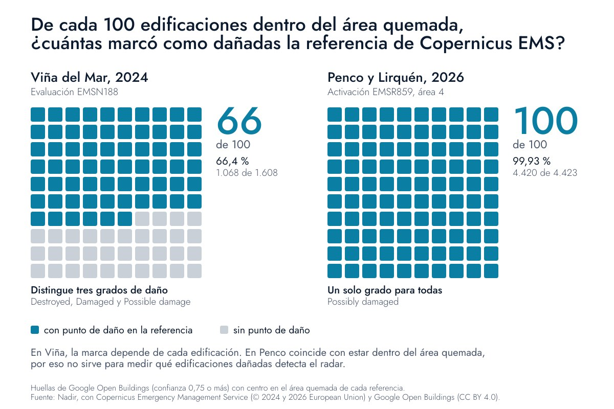

En Penco y Lirquén, 4.420 de las 4.423 huellas de edificaciones con centro en el área quemada tienen un punto de daño en el producto de grado de Copernicus EMS EMSR859. A menos de un kilómetro fuera de esa área lo tienen 49 de 23.708. Los 6.765 puntos llevan el mismo grado, "Possibly damaged".
En Viña del Mar, la evaluación EMSN188 con que validé el radar separa tres grados (5.694 "Destroyed", 570 "Damaged" y 1.011 "Possible damage") y marca el 66,4 % de las huellas del área quemada. Allí la marca depende de cada edificación. En Penco depende de estar dentro de un perímetro de 12.781,3 hectáreas.
Contra esa referencia, la sensibilidad del radar en Penco contaría cuántas edificaciones del perímetro tienen señal, no cuántas dañadas detecta, y no se podría poner al lado del 79,4 % de Viña.
El protocolo, sellado el 14 de noviembre antes de pedir datos de Sentinel-1, fijaba detenerse si la referencia no traía los grados "Destroyed" y "Damaged". Me detuve ahí, así que Penco no tiene cifras de radar. Copernicus EMS describe la activación EMSR859 como cartografía de la extensión del incendio, y para eso se hizo. Medir daño por edificación en Penco requiere otra referencia, con grados por vivienda.
Fuentes
- Caso Penco y Lirquén 2026 en el repositorio de daño a edificaciones, con el protocolo sellado, la enmienda 01 y los informes.
- Copernicus Emergency Management Service (© 2026 European Union), EMSR859; (© 2024 European Union), EMSN188 y EMSR715.
- Google Open Buildings, CC BY 4.0.